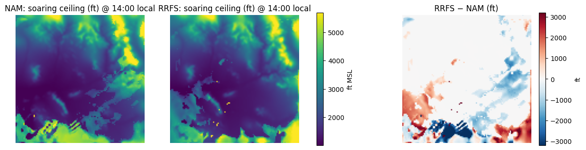
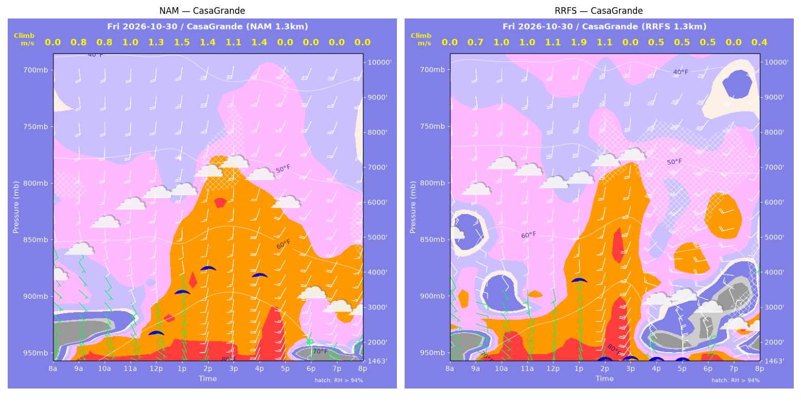
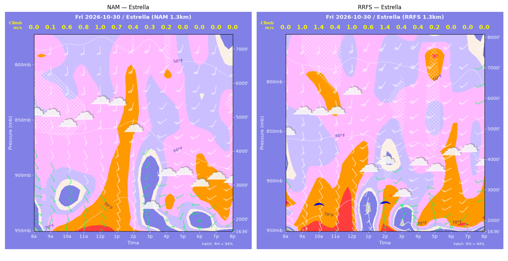
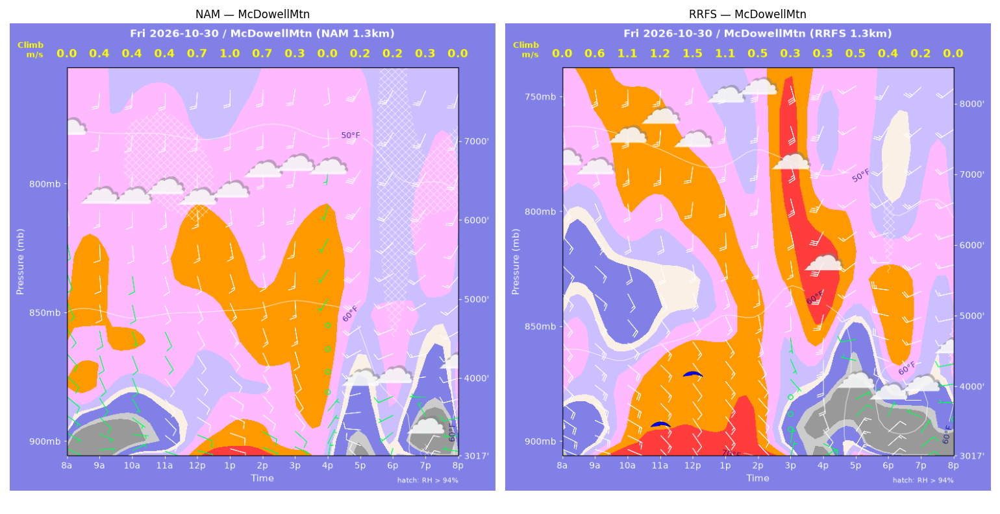
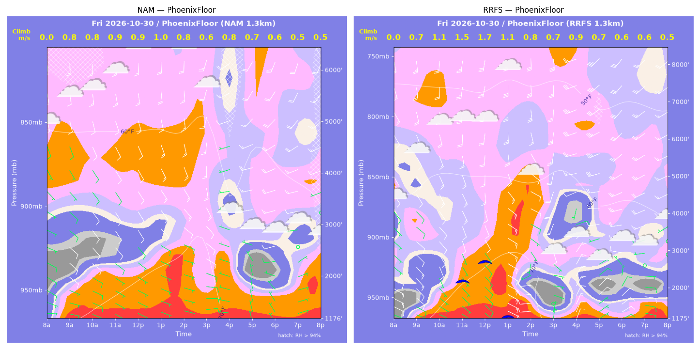
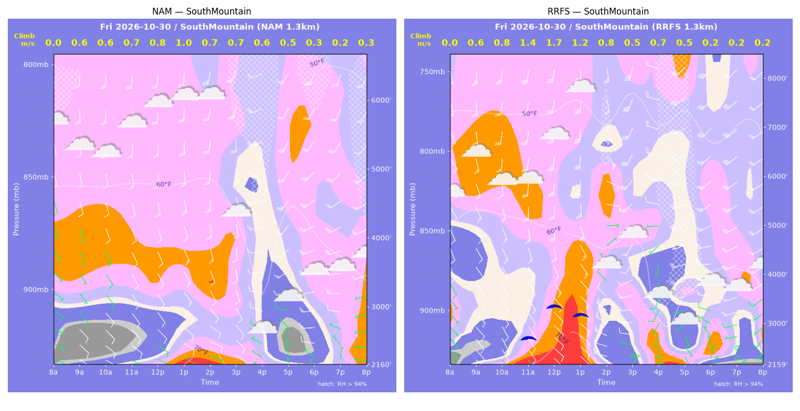
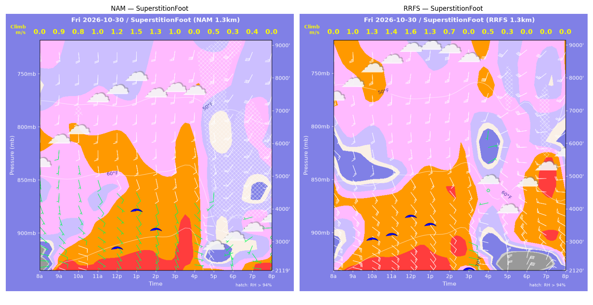
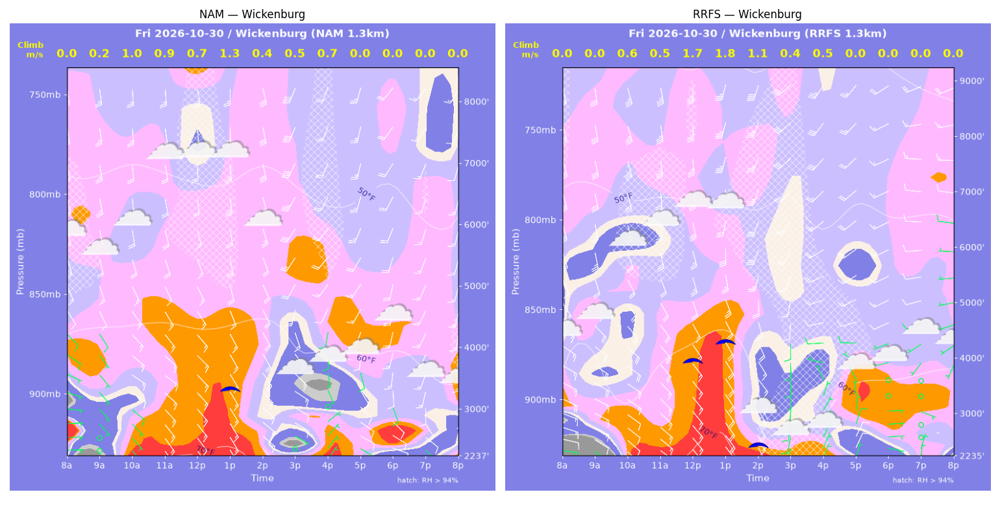

../runs/ab-phoenix-nam — model nam, cycle 2026-10-29 18z, dx 1.3333333740234374 km, 13 hours, grid 114×114../runs/ab-phoenix-rrfs — model rrfs, cycle 2026-10-29 18z, dx 1.3333333740234374 km, 13 hours, grid 114×114Grids identical; afternoon = 12:00–17:59 local (UTC-7). Δ = RRFS − NAM.
| Site | terrain ft | BL top (AGL) med|Δ| / bias (ft) | w* med|Δ| / bias (fpm) | Soaring ceiling med|Δ| / bias (ft) | BL wind speed med|Δ| / bias (kt) | BL wind dir med|Δ| / bias (deg) | 2 m temperature med|Δ| / bias (F) | Sfc LCL (AGL) med|Δ| / bias (ft) | Sensible heat flux med|Δ| / bias (W/m2) |
|---|---|---|---|---|---|---|---|---|---|
| PhoenixFloor | 1176 | 594 / +254 | 17 / +34 | 0 / +252 | 5 / +4 | 45 / +58 | 3 / -1 | 724 / -536 | 35 / +41 |
| SouthMountain | 2160 | 452 / +639 | 33 / +42 | 0 / +366 | 4 / +1 | 88 / +57 | 2 / +0 | 771 / +232 | 28 / +25 |
| SuperstitionFoot | 2119 | 521 / -357 | 87 / -34 | 236 / -136 | 6 / +7 | 26 / +32 | 1 / -1 | 1136 / +430 | 41 / -10 |
| Estrella | 1636 | 765 / +183 | 31 / +48 | 0 / +156 | 3 / +2 | 104 / -11 | 2 / -0 | 563 / -119 | 18 / +36 |
| Wickenburg | 2237 | 445 / +318 | 62 / +70 | 101 / +468 | 2 / +3 | 48 / -21 | 2 / -0 | 723 / -1003 | 63 / +67 |
| CasaGrande | 1464 | 1619 / -1893 | 82 / -55 | 566 / -929 | 3 / +0 | 16 / +48 | 1 / -3 | 266 / -886 | 31 / +3 |
| McDowellMtn | 3018 | 386 / +460 | 44 / +43 | 0 / +197 | 2 / +2 | 50 / +15 | 2 / -0 | 1031 / +623 | 18 / +22 |
| Metric | n | median |Δ| | p90 |Δ| | bias |
|---|---|---|---|---|
| BL top (AGL) (ft) | 42 | 521 | 1917 | -57 |
| w* (fpm) | 42 | 42 | 178 | +21 |
| Soaring ceiling (ft) | 42 | 1 | 1265 | +53 |
| BL wind speed (kt) | 42 | 4 | 9 | +3 |
| BL wind dir (deg) | 42 | 44 | 136 | +25 |
| 2 m temperature (F) | 42 | 2 | 6 | -1 |
| Sfc LCL (AGL) (ft) | 42 | 809 | 2594 | -180 |
| Sensible heat flux (W/m2) | 42 | 32 | 144 | +26 |
diffmap_tol.png| local | BL top NAM/RRFS ft | w* NAM/RRFS fpm | ceiling NAM/RRFS ft | BL wind NAM/RRFS | T2 NAM/RRFS F | HFX NAM/RRFS |
|---|---|---|---|---|---|---|
| 08:00 | 0 / 0 | 0 / 0 | 1176 / 1176 | 3kt@080 / 5kt@108 | 67 / 64 | 0 / 0 |
| 09:00 | 905 / 575 | 157 / 139 | 1176 / 1176 | 9kt@126 / 11kt@131 | 71 / 70 | 66 / 72 |
| 10:00 | 1179 / 1161 | 161 / 208 | 1176 / 1176 | 10kt@127 / 8kt@156 | 72 / 73 | 55 / 120 |
| 11:00 | 1263 / 2112 | 182 / 288 | 1176 / 2203 | 9kt@139 / 9kt@163 | 74 / 77 | 75 / 177 |
| 12:00 | 1292 / 2622 | 186 / 340 | 1176 / 2690 | 8kt@139 / 12kt@167 | 75 / 79 | 78 / 237 |
| 13:00 | 1517 / 3446 | 193 / 217 | 1176 / 1176 | 8kt@124 / 15kt@144 | 77 / 80 | 74 / 47 |
| 14:00 | 1641 / 922 | 156 / 161 | 1176 / 1176 | 11kt@127 / 10kt@260 | 78 / 76 | 36 / 71 |
| 15:00 | 944 / 579 | 118 / 139 | 1176 / 1176 | 9kt@112 / 4kt@119 | 77 / 69 | 27 / 71 |
| 16:00 | 1502 / 1033 | 161 / 174 | 1176 / 1176 | 5kt@289 / 16kt@029 | 70 / 71 | 43 / 79 |
| 17:00 | 898 / 716 | 144 / 133 | 1176 / 1176 | 7kt@345 / 12kt@047 | 70 / 68 | 51 / 50 |
| 18:00 | 746 / 527 | 109 / 110 | 1176 / 1176 | 5kt@296 / 9kt@049 | 69 / 68 | 27 / 39 |
| 19:00 | 897 / 711 | 90 / 111 | 1176 / 1176 | 5kt@070 / 8kt@097 | 70 / 68 | 12 / 30 |
| 20:00 | 1449 / 681 | 103 / 94 | 1176 / 1176 | 7kt@111 / 12kt@084 | 70 / 69 | 12 / 18 |
| local | BL top NAM/RRFS ft | w* NAM/RRFS fpm | ceiling NAM/RRFS ft | BL wind NAM/RRFS | T2 NAM/RRFS F | HFX NAM/RRFS |
|---|---|---|---|---|---|---|
| 08:00 | 0 / 0 | 0 / 0 | 2160 / 2160 | 5kt@112 / 6kt@135 | 67 / 63 | 0 / 0 |
| 09:00 | 285 / 354 | 116 / 120 | 2160 / 2160 | 11kt@137 / 12kt@142 | 68 / 67 | 85 / 74 |
| 10:00 | 306 / 512 | 114 / 159 | 2160 / 2160 | 12kt@136 / 11kt@155 | 68 / 69 | 74 / 122 |
| 11:00 | 407 / 1369 | 135 / 267 | 2160 / 2749 | 11kt@139 / 14kt@145 | 69 / 72 | 93 / 216 |
| 12:00 | 510 / 2155 | 149 / 327 | 2160 / 3365 | 10kt@142 / 15kt@159 | 70 / 75 | 100 / 254 |
| 13:00 | 935 / 2873 | 192 / 245 | 2160 / 3151 | 13kt@138 / 19kt@164 | 72 / 75 | 118 / 80 |
| 14:00 | 715 / 534 | 136 / 162 | 2160 / 2160 | 12kt@141 / 15kt@289 | 73 / 67 | 54 / 123 |
| 15:00 | 694 / 378 | 136 / 97 | 2160 / 2160 | 10kt@139 / 6kt@275 | 70 / 69 | 56 / 37 |
| 16:00 | 505 / 1092 | 110 / 136 | 2160 / 2160 | 11kt@280 / 9kt@199 | 64 / 65 | 40 / 35 |
| 17:00 | 336 / 494 | 101 / 106 | 2160 / 2160 | 9kt@324 / 3kt@058 | 65 / 64 | 47 / 37 |
| 18:00 | 250 / 124 | 66 / 49 | 2160 / 2160 | 7kt@292 / 3kt@346 | 66 / 67 | 17 / 15 |
| 19:00 | 237 / 88 | 47 / 36 | 2160 / 2160 | 3kt@327 / 4kt@070 | 66 / 66 | 7 / 8 |
| 20:00 | 1325 / 87 | 67 / 33 | 2160 / 2160 | 9kt@249 / 5kt@110 | 67 / 66 | 3 / 6 |
| local | BL top NAM/RRFS ft | w* NAM/RRFS fpm | ceiling NAM/RRFS ft | BL wind NAM/RRFS | T2 NAM/RRFS F | HFX NAM/RRFS |
|---|---|---|---|---|---|---|
| 08:00 | 0 / 0 | 0 / 0 | 2119 / 2120 | 6kt@076 / 12kt@108 | 63 / 70 | 0 / 0 |
| 09:00 | 1076 / 1243 | 170 / 189 | 2119 / 2120 | 7kt@136 / 25kt@132 | 73 / 73 | 70 / 84 |
| 10:00 | 1271 / 2465 | 151 / 260 | 2119 / 3122 | 7kt@134 / 16kt@147 | 73 / 75 | 42 / 110 |
| 11:00 | 1844 / 2586 | 203 / 270 | 2119 / 3260 | 8kt@142 / 13kt@159 | 75 / 76 | 70 / 118 |
| 12:00 | 2545 / 3195 | 237 / 306 | 2870 / 3793 | 8kt@138 / 17kt@166 | 76 / 77 | 81 / 139 |
| 13:00 | 3598 / 3448 | 302 / 258 | 3976 / 3506 | 14kt@175 / 17kt@168 | 77 / 78 | 119 / 77 |
| 14:00 | 3425 / 2910 | 251 / 145 | 3392 / 2120 | 12kt@174 / 13kt@153 | 77 / 77 | 72 / 16 |
| 15:00 | 2917 / 1691 | 188 / 0 | 2119 / 2120 | 12kt@172 / 12kt@147 | 77 / 76 | 35 / -4 |
| 16:00 | 1115 / 589 | 0 / 106 | 2119 / 2120 | 5kt@120 / 22kt@280 | 75 / 68 | -1 / 30 |
| 17:00 | 486 / 108 | 98 / 53 | 2119 / 2120 | 17kt@310 / 28kt@007 | 65 / 65 | 29 / 21 |
| 18:00 | 287 / 704 | 57 / 0 | 2119 / 2120 | 3kt@314 / 21kt@326 | 66 / 67 | 10 / -20 |
| 19:00 | 547 / 529 | 71 / 0 | 2119 / 2120 | 4kt@165 / 12kt@324 | 67 / 68 | 10 / -4 |
| 20:00 | 524 / 1285 | 0 / 0 | 2119 / 2120 | 1kt@136 / 14kt@297 | 67 / 70 | -0 / -15 |
| local | BL top NAM/RRFS ft | w* NAM/RRFS fpm | ceiling NAM/RRFS ft | BL wind NAM/RRFS | T2 NAM/RRFS F | HFX NAM/RRFS |
|---|---|---|---|---|---|---|
| 08:00 | 0 / 0 | 0 / 0 | 1636 / 1636 | 5kt@114 / 8kt@110 | 66 / 66 | 0 / 0 |
| 09:00 | 123 / 1452 | 22 / 192 | 1636 / 1636 | 3kt@186 / 14kt@143 | 71 / 73 | 1 / 75 |
| 10:00 | 790 / 2179 | 124 / 269 | 1636 / 2585 | 5kt@140 / 13kt@148 | 71 / 75 | 37 / 138 |
| 11:00 | 1120 / 1192 | 160 / 79 | 1636 / 1636 | 7kt@137 / 12kt@151 | 73 / 74 | 56 / 6 |
| 12:00 | 1567 / 2931 | 187 / 206 | 1636 / 1636 | 12kt@146 / 12kt@172 | 75 / 77 | 65 / 46 |
| 13:00 | 2144 / 329 | 135 / 109 | 1636 / 1636 | 15kt@166 / 14kt@159 | 76 / 69 | 17 / 59 |
| 14:00 | 482 / 2006 | 74 / 280 | 1636 / 2573 | 13kt@167 / 11kt@262 | 74 / 72 | 12 / 167 |
| 15:00 | 310 / 266 | 68 / 83 | 1636 / 1636 | 5kt@317 / 10kt@070 | 67 / 68 | 15 / 31 |
| 16:00 | 91 / 256 | 30 / 69 | 1636 / 1636 | 2kt@077 / 9kt@311 | 69 / 72 | 4 / 19 |
| 17:00 | 216 / 120 | 0 / 36 | 1636 / 1636 | 3kt@163 / 7kt@358 | 69 / 70 | -1 / 5 |
| 18:00 | 84 / 85 | 0 / 0 | 1636 / 1636 | 1kt@234 / 1kt@081 | 67 / 70 | -0 / -0 |
| 19:00 | 2186 / 2392 | 0 / 0 | 1636 / 1636 | 18kt@236 / 18kt@233 | 66 / 68 | -2 / -2 |
| 20:00 | 1675 / 117 | 0 / 0 | 1636 / 1636 | 16kt@229 / 3kt@116 | 64 / 68 | -2 / -7 |
| local | BL top NAM/RRFS ft | w* NAM/RRFS fpm | ceiling NAM/RRFS ft | BL wind NAM/RRFS | T2 NAM/RRFS F | HFX NAM/RRFS |
|---|---|---|---|---|---|---|
| 08:00 | 0 / 0 | 0 / 0 | 2237 / 2236 | 5kt@087 / 2kt@039 | 64 / 61 | 0 / 0 |
| 09:00 | 89 / 132 | 31 / 0 | 2237 / 2236 | 1kt@176 / 5kt@127 | 66 / 62 | 4 / -0 |
| 10:00 | 1091 / 1170 | 192 / 127 | 2237 / 2236 | 11kt@122 / 15kt@126 | 70 / 66 | 96 / 25 |
| 11:00 | 1485 / 979 | 182 / 107 | 2237 / 2236 | 14kt@127 / 17kt@134 | 72 / 68 | 60 / 16 |
| 12:00 | 1845 / 3023 | 131 / 335 | 2237 / 3961 | 15kt@138 / 23kt@165 | 71 / 73 | 17 / 188 |
| 13:00 | 2830 / 3386 | 258 / 356 | 3373 / 4256 | 18kt@166 / 26kt@169 | 73 / 75 | 91 / 202 |
| 14:00 | 492 / 1122 | 74 / 226 | 2237 / 2438 | 15kt@131 / 16kt@145 | 69 / 66 | 10 / 155 |
| 15:00 | 402 / 549 | 96 / 85 | 2237 / 2236 | 6kt@117 / 9kt@187 | 63 / 63 | 32 / 16 |
| 16:00 | 960 / 693 | 132 / 105 | 2237 / 2236 | 4kt@152 / 5kt@033 | 65 / 64 | 34 / 24 |
| 17:00 | 887 / 552 | 0 / 0 | 2237 / 2236 | 11kt@137 / 9kt@015 | 65 / 65 | -3 / -4 |
| 18:00 | 874 / 447 | 0 / 0 | 2237 / 2236 | 9kt@161 / 7kt@088 | 66 / 65 | -10 / -1 |
| 19:00 | 749 / 270 | 0 / 0 | 2237 / 2236 | 11kt@173 / 3kt@018 | 63 / 65 | -6 / -1 |
| 20:00 | 1061 / 120 | 0 / 0 | 2237 / 2236 | 14kt@173 / 3kt@158 | 64 / 65 | -5 / -1 |
| local | BL top NAM/RRFS ft | w* NAM/RRFS fpm | ceiling NAM/RRFS ft | BL wind NAM/RRFS | T2 NAM/RRFS F | HFX NAM/RRFS |
|---|---|---|---|---|---|---|
| 08:00 | 0 / 0 | 0 / 0 | 1464 / 1463 | 4kt@134 / 3kt@107 | 64 / 63 | 0 / 0 |
| 09:00 | 768 / 590 | 161 / 146 | 1464 / 1463 | 6kt@156 / 8kt@118 | 70 / 71 | 84 / 81 |
| 10:00 | 979 / 1487 | 152 / 193 | 1464 / 1463 | 6kt@156 / 8kt@142 | 72 / 74 | 55 / 76 |
| 11:00 | 1176 / 1558 | 195 / 206 | 1464 / 1463 | 6kt@155 / 7kt@172 | 75 / 76 | 98 / 87 |
| 12:00 | 2155 / 1836 | 255 / 224 | 2302 / 1463 | 9kt@175 / 7kt@165 | 77 / 78 | 120 / 96 |
| 13:00 | 3859 / 3678 | 299 / 373 | 3432 / 3725 | 15kt@182 / 18kt@184 | 79 / 80 | 108 / 221 |
| 14:00 | 5693 / 5120 | 278 / 207 | 4090 / 1463 | 16kt@189 / 18kt@188 | 81 / 82 | 59 / 27 |
| 15:00 | 5600 / 2936 | 220 / 0 | 1464 / 1463 | 19kt@181 / 23kt@204 | 82 / 82 | 30 / -4 |
| 16:00 | 5357 / 494 | 273 / 98 | 3865 / 1463 | 22kt@198 / 13kt@327 | 81 / 70 | 60 / 30 |
| 17:00 | 3219 / 461 | 0 / 91 | 1464 / 1463 | 15kt@213 / 19kt@359 | 78 / 69 | -2 / 25 |
| 18:00 | 278 / 621 | 0 / 89 | 1464 / 1463 | 4kt@340 / 11kt@358 | 70 / 68 | -2 / 18 |
| 19:00 | 84 / 952 | 0 / 0 | 1464 / 1463 | 3kt@024 / 10kt@043 | 68 / 65 | -0 / -5 |
| 20:00 | 271 / 382 | 0 / 72 | 1464 / 1463 | 5kt@018 / 10kt@078 | 68 / 66 | -1 / 15 |
| local | BL top NAM/RRFS ft | w* NAM/RRFS fpm | ceiling NAM/RRFS ft | BL wind NAM/RRFS | T2 NAM/RRFS F | HFX NAM/RRFS |
|---|---|---|---|---|---|---|
| 08:00 | 0 / 0 | 0 / 0 | 3018 / 3017 | 6kt@110 / 13kt@112 | 64 / 64 | 0 / 0 |
| 09:00 | 214 / 510 | 80 / 125 | 3018 / 3017 | 5kt@081 / 21kt@116 | 65 / 65 | 33 / 58 |
| 10:00 | 270 / 1498 | 73 / 211 | 3018 / 3017 | 5kt@091 / 21kt@135 | 65 / 68 | 20 / 96 |
| 11:00 | 319 / 1827 | 78 / 234 | 3018 / 3520 | 8kt@129 / 15kt@143 | 66 / 70 | 20 / 107 |
| 12:00 | 695 / 2291 | 132 / 302 | 3018 / 4201 | 10kt@129 / 18kt@159 | 68 / 71 | 48 / 185 |
| 13:00 | 1274 / 1999 | 196 / 211 | 3018 / 3017 | 12kt@139 / 16kt@155 | 70 / 72 | 86 / 71 |
| 14:00 | 1057 / 1545 | 147 / 106 | 3018 / 3017 | 13kt@150 / 13kt@159 | 70 / 71 | 43 / 11 |
| 15:00 | 377 / 261 | 50 / 60 | 3018 / 3017 | 8kt@135 / 4kt@006 | 70 / 68 | 3 / 12 |
| 16:00 | 422 / 203 | 0 / 57 | 3018 / 3017 | 5kt@038 / 6kt@107 | 69 / 65 | -3 / 13 |
| 17:00 | 103 / 386 | 44 / 92 | 3018 / 3017 | 12kt@290 / 13kt@023 | 63 / 60 | 10 / 29 |
| 18:00 | 108 / 250 | 37 / 71 | 3018 / 3017 | 5kt@131 / 10kt@043 | 63 / 59 | 5 / 20 |
| 19:00 | 235 / 99 | 69 / 36 | 3018 / 3017 | 11kt@020 / 8kt@051 | 59 / 59 | 19 / 7 |
| 20:00 | 105 / 284 | 0 / 0 | 3018 / 3017 | 2kt@264 / 6kt@078 | 62 / 59 | -0 / -2 |
montage_PhoenixFloor.pngmontage_SouthMountain.pngmontage_SuperstitionFoot.pngmontage_Estrella.pngmontage_Wickenburg.pngmontage_CasaGrande.pngmontage_McDowellMtn.png